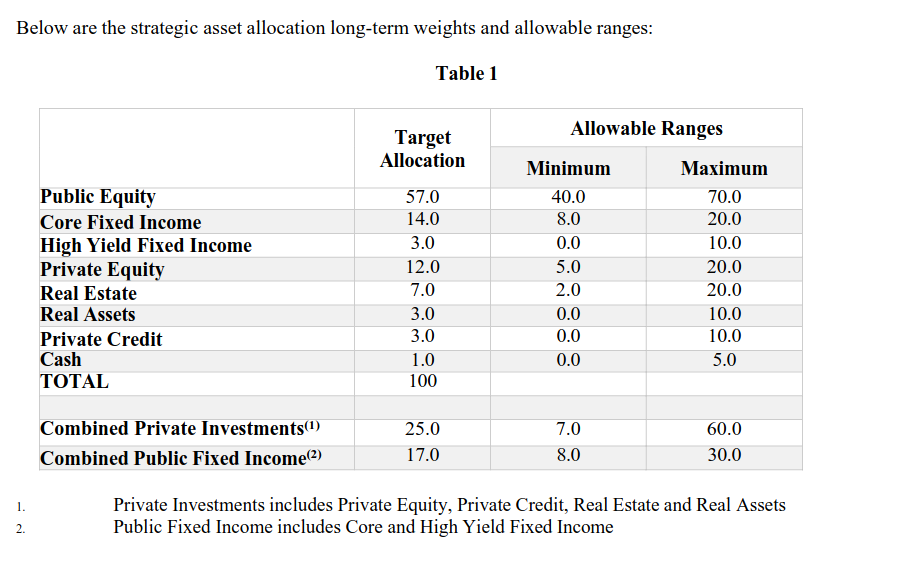

The University of California controls one of the largest university investment portfolios with managing over $150 billion in assets. Because these investments consist of large stakes in industries such as fossil fuels, defense contracts, and global markets, UC’s financial decisions have long been the target of activism and pushback from their own students. We explore how UC divestment campaigns across decades unearth influences of neoliberal governance in UC administration, where financial decision making conflicts with demands from the campus communities which those funds are meant to serve.
clik on any event to learn more
Add summary

“Sustainability Objective UC Investments shall incorporate environmental sustainability, social responsibility, and governance (ESG) into the investment evaluation process as part of its overall risk assessment…”
— UC Regents Policy (see 6102)
text.